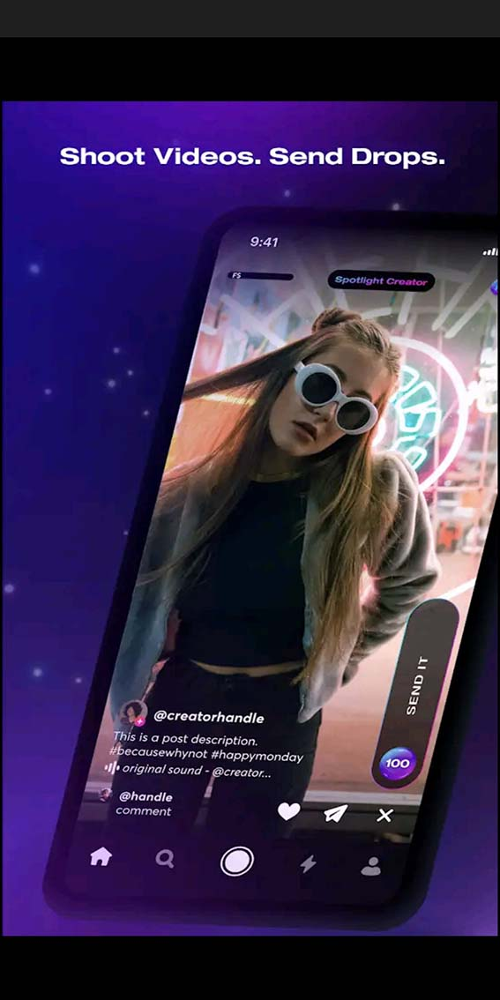

TikTok: Videos & Música
Versión 21.7.0
Funcionalidades:
TikTok (también conocido como Douyin) permite crear, editar y subir videoselfies musicales de 60s, 15s o 3 minutos, pudiendo aplicarles varios efectos y añadirles un fondo musical. Todo ello se ofrece de una forma sencilla, y con opciones de edición fáciles de utilizar para que todos puedan hacer vídeos divertidos sin tener grandes conocimientos de edición. Además, la aplicación incluye otras funciones como la posibilidad de enviar mensajes, votaciones, listas de amigos y por supuesto un sistema de seguidores y seguidos. Muy al estilo de Instagram, pero centrado en los vídeos.La compañía permite a todos ser creadores y anima a los usuarios a compartir su pasión y expresión creativa a través de sus videos.

¿Cómo gana dinero Tiktok?
Los videos publicitarios aparecen en la aplicación y los tiktokers colocan productos en sus videos. Cada vez hay más formas de integrar anuncios en Tiktok. Hasta los desafíos pueden ser financiados por las marcas. TikTok está valorado en 75 Billones de dòlares.
Compañia
Lanzado en 2016 por la compañía china de startups ByteDance, es conocido allí como Douyin. Su crecimiento estratosférico en uso realmente comenzó a finales de 2017, cuando adquirió una aplicación rival, Musical.ly, y portó su lista de 200 millones de cuentas a TikTok.
ByteDance tenía un valor de hasta 140.000 millones de dólares a mediados de 2020, basado en la venta privada de una pequeña participación en la compañía. Se dijo que TikTok solo valía unos 50 mil millones de dólares. Eso la convertiría en la startup más valiosa del mundo.
Tras la presión de la Administración Trump, ByteDance acordó crear una nueva compañía, TikTok Global. En esta propuesta, ByteDance seguiría siendo propietaria del 80% de TikTok Global, con Oracle y Walmart como sus propietarios minoritarios y socios estadounidenses.
Alternativas
Web:dubsmash.com|iOS:dubsmash|Android:Dubsmash.
Web:byte.com | iOS:Byte | Android:Byte.
Web:triller.co | iOS:Triller | Android:Triller.
Web:funimate.com | iOS:Funimate | Android:Funimate.
Web:chingari.io | iOS:Chingari | Android:Chingari.
Valoración
La valoración de ByteDance, propietaria de la popular red social de videos cortos TikTok, ha aumentado al menos un tercio a más de 100,000 millones de dólares en transacciones recientes de acciones, según personas familiarizadas con el asunto.
El aumento de al menos un tercio del valor de TikTok, refleja las expectativas de que la compañía seguirá atrayendo a los anunciantes, a pesar de la pandemia de COVID-19.
Clash: Shoot Videos Send Drops
Funcionalidades:
Byte permite a los usuarios publicar videos de 2 a 16 segundos de duración, ya sea capturados a través de la aplicación o previamente grabados y almacenados en sus dispositivos. De manera similar a otras plataformas de redes sociales, Byte permite a los usuarios seguir otras cuentas. Byte está disponible únicamente como aplicación para mobile, tanto en iOS como Android y no existe todavía una versión web. Su formato es idéntico al de las redes sociales modernas: contenido en vertical, con un scroll infinito hacia abajo. Los videos que veremos pertenecerán a los “byters” o cuentas que sigamos, mostrándose primero los más recientes en el tiempo.

Financiación
Una de las mayores preocupaciones es saber si el modelo de negocios será rentable. Nadie desea vivir un deja vu del fracaso pasado, por lo que Hofmann ha salido a calmar las aguas. Al respecto, el creador de esta nueva aplicación aseguró que su compañía está “explorando diferentes opciones de monetización”. La primera (y más viable) parece ser la de desarrollar un “programa para socios”. Con él se intentará que los potenciales influencers puedan facturar por los contenidos generados. Una necesidad básica a atacar para evitar el éxodo masivo de creadores hacia otras redes. Algo que sí le sucedió a Vine y fue, en gran medida, la principal razón de su declive.
Compañia
En 2017 Vine nos dijo adiós, una popular red social de vídeos cortos que nació en junio de 2012 y que cuatro meses después compró Twitter para a los cinco años tomar la mala decisión de cerrar la plataforma. Ahora tres años después llega su sucesor.El cofundador de Vine, Don Hofmann, abandonó Twitter a los pocos meses para trabajar en Byte, su nueva aplicación y red social de vídeos cortos de hasta seis segundos que tras varios años de desarrollo por fin podemos disfrutar en nuestros dispositivos móviles.
Alternativas
Reels (Instagram)
Triller
Likee
Funimate
TikTok
Dubsmash
Firework
Valoración
La nueva aplicación de videos cortos, creada por Dom Hofmann, fundador de la ya extinta plataforma, también de videos, Vine, llegó en menos de 15 días al millón de descargas en los países en lo que ya está funcionando, Colombia no es uno de ellos. La plataforma desea adaptarse a las demandad de los usuarios de Internet que prefieren un contenido fugaz, pero entretenido.
Según datos de Sensor Tower, herramienta para monitorizar el rendimiento de aplicaciones, Byte ha sido bien recibido por el público alcanzando 1.300.000 descargas en dos semanas.
Estados Unidos fue el país en el que más acogida tuvo la aplicación, con un total de 912 mil descargas, es decir, el 70 por ciento de las instalaciones. En Gran Bretaña y Canadá se concentra el 13 por ciento de las descargas.
Además, según Sensor Tower la mayoría de estas se realizaron en dispositivos iOS con un total de 950.000 frente a las 350.000 que se hicieron en Android.